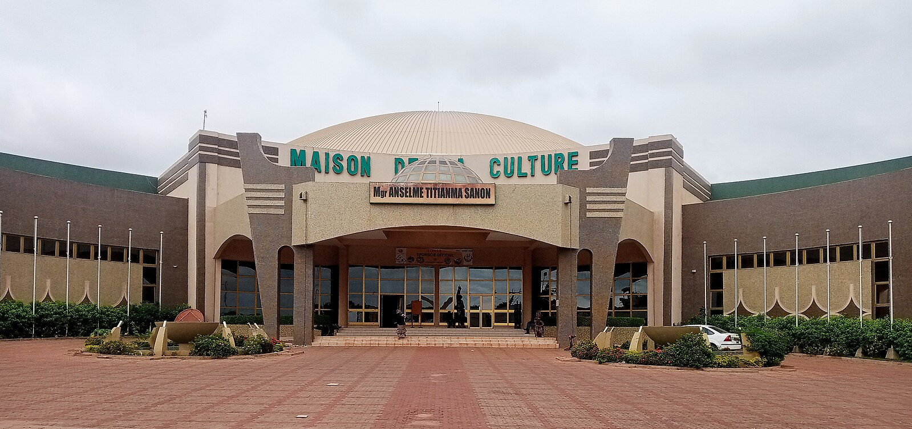

Activitées Exceptionnelles dans la ville de Sya

Semaine nationale de la Culture
La Semaine Nationale de la Culture offre l'opportunité aux artistes burkinabè d'exprimer leurs talents dans divers domaines.
En savoir plus
Les randonnées en forets
Ces forets ont ete mises en place principalement pour la conservation des ressources naturelles et la proctection de la biodiversite locale.
En savoir plus

Festival International de Théatre de Bobo-Dioulasso
Le festival International de Théatre de Bobo-Dioulasso qui dure generalement une semaine ,presente des spectacles de théatre,ateliers,conférences,rencontres professionnelles,et autres evenements culturels lies au théatre.
En savoir plus
Le Festival des Arts et Cultures de Bobo-Dioulasso
Avant la colonisation,les arts a Bobo-Dioulasso etaient fortement influences par les pratiques traditionnelles et religieuses des communautes locales.
En savoir plus